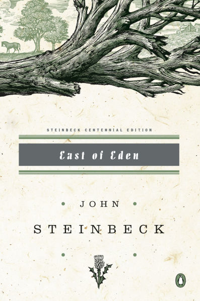
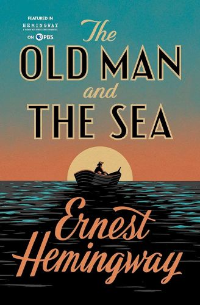
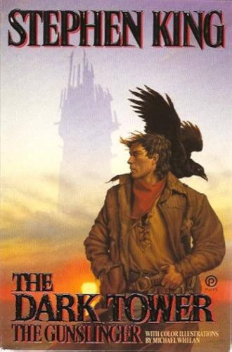
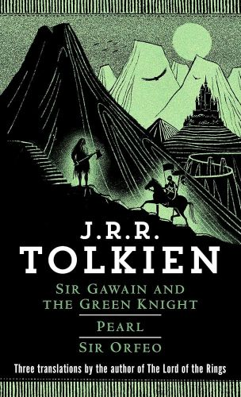
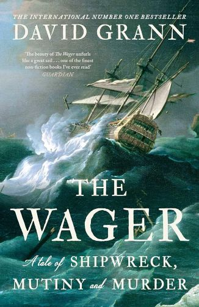
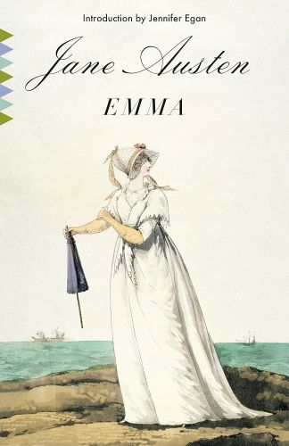
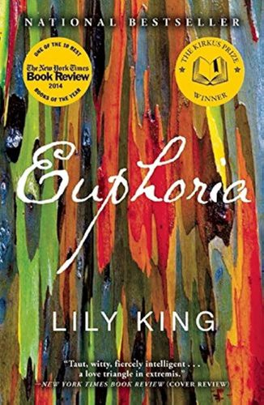
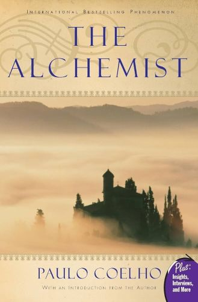
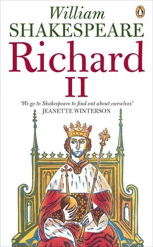
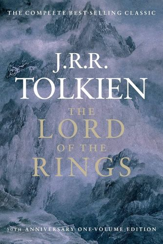

Meet The Writer
Aidan is a student at the University of Massachussetts in Amherst. As an English major, he undertakes classes on early and contemporary British and American literature. He has a deeply rooted interest in texts concerning free will, the human condition, and generational struggles.
After starting his internship as a Travel Writer at Catalyst Planet, Aidan has written several articles focused on shedding light on underdiscussed/overlooked global issues. He also writes about his own travels, particularly those in England and Wales.
In his spare time, Aidan runs and bikes, essential elements for his writing ritual. Some of his favorite author's include Stephen King, John Steinbeck, Earnest Hemingway, and David Grann.









